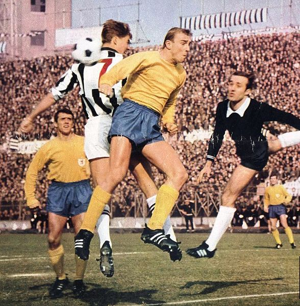

Gründung
Der Verein wurde am 15. Dezember 1895 in der Wohnung des Braunschweiger Ingenieurs Carl Schaper als Fußball- und Cricket Club Eintracht Braunschweig gegründet. Unter den Gründungsmitgliedern waren überwiegend jugendliche Straßenfußballer, die ihrer Leidenschaft auf dem Leonhardplatz im Südosten Braunschweigs nachgingen. In den folgenden zwei Jahren fanden die ersten Freundschaftsspiele gegen andere Vereine statt.
Deutscher Meister 1967

1967 wurde Eintracht Braunschweig deutscher Fußballmeister. Nach sechs Begegnungen war die Eintracht mit 9:3 Punkten erstmals Tabellenführer. Im Laufe der Saison wurde u. a. der FC Bayern mit 5:2 besiegt. Am 17. Spieltag feierte man die Herbstmeisterschaft, punktgleich mit dem Hamburger SV. In der Abschlusstabelle hatte die Mannschaft zwei Punkte Vorsprung vor dem TSV 1860 München. Bekannteste Spieler der Meistermannschaft waren Lothar Ulsaß, Horst Wolter, Jürgen Moll, Joachim Bäse und Klaus Gerwien. Der Verein gewann in dieser Saison viele Spiele mit 1:0 oder 2:0, daher galt vor allem die Abwehrleistung als gut. Insgesamt kassierte die Mannschaft nur 27 Gegentore und stellte damit einen Bundesliga-Rekord auf, der erst 1988 von Werder Bremen unter Otto Rehhagel unterboten wurde. Der Vizemeister 1860 München kassierte zum Vergleich 47 Gegentore. Die Mannschaft galt als eingespielt, zehn Akteure kamen zu jeweils mehr als 30 Einsätzen.[5] Entschieden wurde die Meisterschaft mit einem 0:0 am 33. Spieltag im Auswärtsspiel bei Rot-Weiss Essen. Unter den Eintracht-Fans dort war Viktor Siuda, der die 328 Kilometer von Braunschweig nach Essen zu Fuß gegangen und 20 Minuten vor dem Spiel im Stadion eingetroffen war. Siuda war zugleich einer der Leichtathleten des Vereins. Er hatte mit der Eintracht-Mannschaft in den Jahren 1954–1958 viermal die deutsche Meisterschaft im Langstrecken-Gehen (20 und 50 km) gewonnen. Nach einem 4:1-Sieg im letzten Saisonspiel gegen den 1. FC Nürnberg vor 37.000 Zuschauern im Eintracht-Stadion folgte die mehrtägige Meisterfeier.
Bundeligasaison 2013/14
Zu Beginn der Bundesligasaison setzte Lieberknecht im Wesentlichen auf die Aufstiegshelden und verstärkte sich beispielsweise mit dem späteren Nationalspieler und ehemaligen Braunschweiger Karim Bellarabi nur punktuell. Am 8. Spieltag der Saison 2013/14 gelang den Braunschweigern mit einem 2:0 im Derby gegen den VfL Wolfsburg der erste Sieg im Oberhaus seit dem Wiederaufstieg. Im Laufe der Saison belegte die Eintracht die meiste Zeit über den letzten Tabellenplatz, aber mit einem 3:0-Derbysieg am 29. Spieltag gegen Hannover 96 vor eigener Kulisse nährte sie noch einmal Hoffnungen auf den Klassenerhalt. Bis zum letzten Spieltag bewahrte sie sich die Chance, zumindest den Relegationsplatz zu erreichen. Dieser wurde durch eine 1:3-Auswärtsniederlage bei der TSG 1899 Hoffenheim schlussendlich verpasst. Zwar wurden die sportlichen Ziele durch den Abstieg verpasst, aber der Verein konnte seine restlichen Schulden vollständig abbauen, indem der Umsatz verfünffacht und auf teure Neuzugänge verzichtet wurde.